1.1 JDK Flight Recoder
パフォーマンス分析(Profiling)と診断(Diagnosis)
JDK Flight Recoder(JFR)はJavaで利用できるパフォーマンス分析(Profiling)と診断(Diagnosis)の為のツールです。
もう少し、シンプルに言えばトラブルシュートの支援ツールです。JFRではCPUやメモリなどのリソースの使用状況やGCの状態、スレッドのロックやスタックトレースなど様々なメトリクスを分析することができます。
以前はOracle JDKの商用サポート(Java SE Advanced)またはWeblogic等の商用製品を利用しているカスタマー向けの機能でしたが、OpenJDK11にOracleより寄贈されたので現在は誰でも自由に使うことができます。太っ腹ですね！
さて、何故このようなツールが必要かと言うとアプリケーションの障害や性能遅延の分析をする為です。
アプリケーションログに分析に必要な情報を随時出しておく、と言うことも当然できますがオーバーヘッドの問題や必要な情報が膨大になるので何かしらの専用ツール/コマンドを使うのが一般的です。
極めて類似した概念に監視(Monitoring)があります。例えばCPUリソースやメモリの状態などはリアルタイムにZabbixやDatadogといった監視ツールでモニタリングされ閾値を越えるとアラートが飛ぶ仕組みは一般的だと思います。
また、New RelicやDynatraceなどのようなApplication Perfomance Monitor(APM)はアプリケーションの性能監視に特化していて、レスポンスの遅延のモニタリングはもちろん、分散トレース機能やドリルダウン分析による遅延箇所の特定のような診断機能なども備えておりマイクロサービスの運用には欠かせないものとなっています。
このように 「性能を診る」 と言う点ではMonitoringとProfiling/Diagnosisは見てるメトリクスは同じなのですが、タイミングと目的が違います。基本的にはMonitoringのロールは 「問題が起こっている事を発見する」 であり 「問題が起こっている最中に利用されるもの」です。一方、Profiling/Diagnosisは 「問題箇所の特定と分析」がロールとなり 「問題が起こった後に利用されるもの」です。
この違いはそれぞれのツールの特徴の違いにもなりますが、APMはMonitoringを主眼としつつもProfiling/Diagnosisを取り込んだ統合ツールですし、複数のロールを兼ね備えたツールというのはこの分野に限らず一般的なので混乱してしまうかもしれません。
なので、多少すでに導入済のツールと被ってる機能があっても「自分たちが何の為に導入しようとしているのか？」をしっかり見据えて目的に合ったツールを選択することが重要です。
また、JFRは性能問題を含むトラブルシューティングの為のツールなのでたとえば原因不明のバッチの停止やリアルタイムプロセスの異常終了にも利用します。この辺りはAPMを導入していてもProfilingやDiagnosisのツールが必要になってくる理由です。
JDK Flight Recoder(JFR)の特徴
JFRはJVMに組み込まれていると言うチート的な機能なため非常にオーバーヘッドが非常に小さい(1%から3%)です。以下のような３つの特徴があります。
- ブラック・ボックス分析
- 複合的なメトリクスをファイルに格納
- 拡張可能
ブラック・ボックス分析
ブラック・ボックス分析 はJFRの最大の特徴であり、Flight Recoderの名前の由来でもあります。 そもそもFlight Recorderとは飛行機の障害対応/事故分析の為に生まれた仕組みに由来します。
ブラックボックスとは、フライトデータレコーダー (FDR) とコックピットボイスレコーダー (CVR) の通称である。
〜 中略 〜
事故が発生した際、乗員・乗客が全員死亡することも珍しくない航空事故では、事故原因究明の手掛かりを得ることが大変難しい。そのため、飛行中のコックピット内で操縦士たちが交わした会話や航空交通管制機関との交信内容、機体の飛行状況を記録し続けることにより、事故原因究明のための手掛かりとするべく旅客機に搭載されている
Ref: ブラックボックス (航空) - Wikipedia)
これはシステム障害でも実は同じような問題があります。トラブルシュートで一番困るのは 「本番環境のみで不定期に発生する障害」 です。
通常監視の範囲でとってるメトリクスで分析できればまだ良いのですが、そうでない場合は監視の設定を変えたりアプリやミドルウェアのログを追加して 「障害の再発を待つ」必要があります。あるいは障害時にその瞬間の詳細メトリクスを取得するコマンドを打つという作業も必要になってくるかもしれません。
こうして得た情報を元に仮説を立て、テスト環境で問題を再現させ、バグを修正し、リリースして、バグが再現しないことを確認するまでがトラブルシュートとなります。
感覚的にはトラブルシュートのタスクの8割くらいは原因の究明です。バグ修正とかはそれに比べれば小さな割合です。そして原因究明という推理ゲームはヒントとなる手掛かりがが必要になってきます。
なので、リアルタイムに大量のメトリクスを収集しているJFRはトラブルシュートの強い味方になるのです。
JVMに組み込まれている為オーバーヘッドの小さいJFRは 「本番稼働中のアプリケーションに常時適用可能」です。それでいてCPUやメモリ(Heap/Metaspace/OSメモリ)、GCログはもちろんですがネットワークI/OやディスクI/Oそしてスタックトレースとかなり大量の情報集めています。
また、プロセス終了時などの異常動作時にはメモリバッファに書き込んでいたログ情報もファイルにフラッシュするという特徴も持っています。
これらの特徴は大量の情報から素早く原因究明が出来るだけではなく 「障害の再発を待つ(=少なくとももう一度障害が起こる)」 「異常動作時に詳細ログを取る(=障害復旧に必要な時間が伸びる)」 といった行為が無くなるので非常にビジネス的にも有用な効果をもたらします。
図: ブラック・ボックス分析による障害分析時間の短縮

このようなブラック・ボックス分析を実現するのがJFRです。
複合的なメトリクスをファイルに格納
ブラックボックス分析の一部とも言えますがJFRの特徴として 「１ファイルに複合的なメトリクスをファイルに格納されている」 という点があります。
JavaにはGCログを取る仕組みやスレッドダンプを取る仕組みあがり、古くからトラブルシュートの方法として利用されていました。特にGCログは常時取るのがベストプラクティスとされています。
また、OSのCPUやI/O WaitもZabbixのような統合監視ツールやLinuxのSysstat(sar))で過去の情報を含めて記録するのが一般的です。
その他にもTomcat, GlassFishのようなミドルウェアのログやアプリケーションのログにも様々な情報が含まれているます。エラー時にはスタックトレースの情報も当然出力してるでしょうし。
以前は、こうした様々なファイルの情報を取得し、awkで加工あるいはExcelで時系列ベースにサマリをビジュアライズ、という事をしていました。つまり、散らばった有用な情報をかき集める事から始める必要があったわけです。
一方、JFRは前述したような複数のメトリクスを単一のファイルに出力します。また、Weblogicのような一部のミドルウェアは診断ログをJFRに書き込む機能を備えておりJFRだけを見ればOS,JVM, ミドルウェアといった様々なログを一括して見れるという特徴を持っています。
下記の図のように従来のログだと調査をしながらつどつどログを取得する必要があります。一方、JFRには必要な情報が１ファイルに集約されているので一度の取得で済みます。
これは自分で分析するにしろ、商用サポートに投げるにしろとても効率的です。特に、ログの取得を依頼ベースで実施しないといけない時には大きな時間短縮になります。
図: JFRによるデータ取得手続きの省略 
また、JDK Mission Control(JMC)というビジュアル分析ツールもサポートしており、JMCとJFRを組み合わせる事で効率的な分析を実現しています。
拡張可能
最後にJFRは 「拡張可能」という特徴を持っています。
JFRは標準機能としてJVMから取得する様々な情報を格納しますが、JFR APIを使ってカスタムイベントを作ることで好きな値を格納可能です。
前述したWeblogicもカスタムイベントを使ってWeblogicが元々持つWLDFと呼ばれる診断ログをJFRに書き込んでいます。これによりメソッドの分散トレースや実行されているSQLクエリの分析なども可能になっています。
このような拡張はJFR APIを使うことで誰も可能です。その為、GlassFishやTomcatでもWeblogicと同じようにJFRにログを書くことは可能ですし、フレームワークや自分たちのアプリケーションそのもののログをJFRに書くことも可能です。
こうすることで、JFRに必要な情報が集約され、トラブルシュートで複数のログの突き合わせる必要も無くなります。
カスタムAPIに関しては元々非公式版として存在していたのですが、非公式なのでWeblogicくらいしかサポートしてない状態が続いていました。
JDK9よりjdk.jfr.*がJFR APIとして公式にサポートされたことで、今後は活用が充実していくと思われます。
図: JFRの拡張

JDK JFR APIにより自分のアプリケーションは元より、フレームワークやアプリケーションコンテナのログも集約できる可能性が出てきます。
また、Consume APIを活用する事でJMC/VisualVMといった公式ツール以外でもJFRの分析を行うことができるようになりました。この辺りに関しては6章や7章で話します。